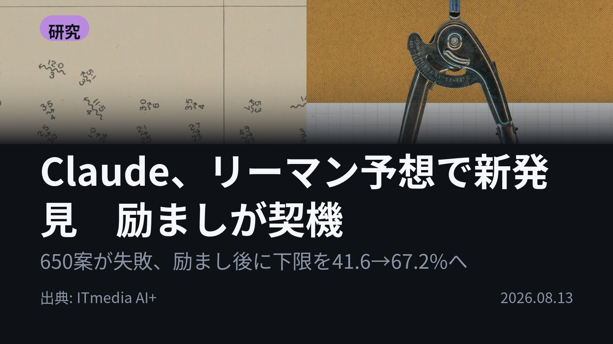
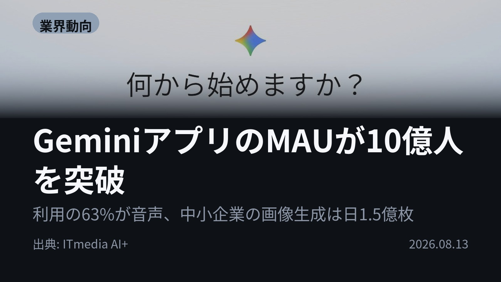
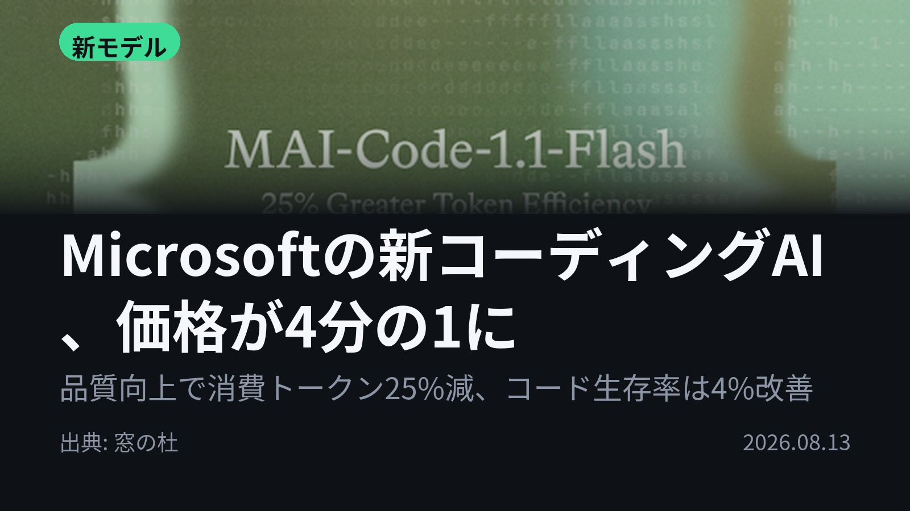
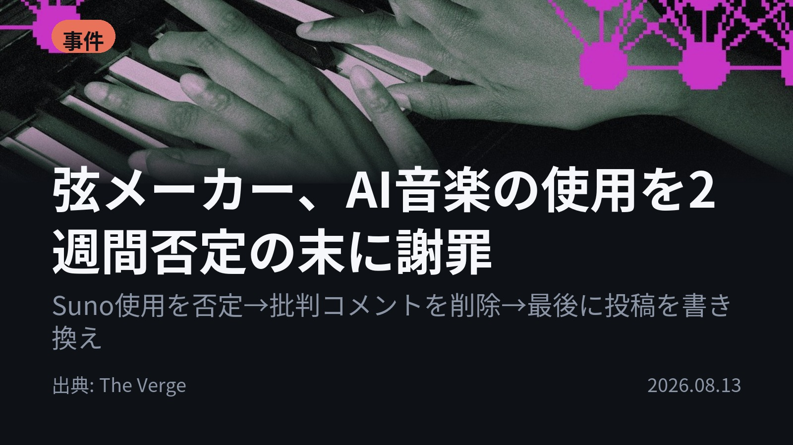

今日のAIニュース 下書き
2026-08-13 生成 08/14 00:15
⚠ ファクト照合で要確認の項目があります。
各ニュースの警告を確認してから投稿してください。
X（4投稿）
Claude、リーマン予想で新発見 励ましが契機
原題: AIが数学の未解決問題「リーマン予想」で新発見 当初苦戦も「諦めないで」との励まし受け Anthropic「AIも自身を過小評価か」

650個のアイデアが全部空振り。「諦めないで」と励ました後、Claudeは約60体のサブエージェントで約1日半かけ、リーマン予想のゼロ点の割合の下限を41.6%→67.2%に引き上げる方法を発見した。数学者4人が精査済み。声かけが成果を分けた。 #AI #Claude （出典: ITmedia AI+）
重み 255 / 280（見た目 151字）
要確認:
［固有名詞］サブエージェント — この語が本文に見つかりません
GeminiアプリのMAUが10億人を突破
原題: GeminiアプリのMAUが10億人を突破 Googleで14番目の大台到達製品に

10億人がGeminiを使う時代、その63%は文字ではなく音声で話しかけている。Geminiアプリの月間利用者が10億人を突破、Googleで14番目の到達製品に。中小企業の画像生成は1日1.5億枚。AIの入り口はキーボードから声へ動いた。 #生成AI #Gemini （出典: ITmedia AI+）
重み 245 / 280（見た目 151字）
要確認:
［数値］1.5億 — この数値の根拠が本文に見つかりません
［固有名詞］キーボード — この語が本文に見つかりません
Microsoftの新コーディングAI、価格が4分の1に
原題: 品質は上がったのに価格は1/4 ～Microsoft、軽量コーディングモデル「MAI-Code-1.1-Flash」を発表／「GitHub Copilot」ですでに本番稼働

品質が上がると高くなる、は崩れた。Microsoftの軽量コーディングAI「MAI-Code-1.1-Flash」は6月版より高品質で、価格は1/4、必要トークンは25%減。GitHub Copilotで本番稼働中。生成コードが残る割合も4%改善した。 #AI #GitHubCopilot （出典: 窓の杜）
重み 236 / 280（見た目 154字）
弦メーカー、AI音楽の使用を2週間否定の末に謝罪
原題: Guitar company D’Addario admits that AI music was used in a promotional video

批判コメントを消しても、音は嘘をつけなかった。弦メーカーD'Addarioが約2週間の否定の末、宣伝動画にSuno Studioを使ったと認め謝罪。今後は社員と制作パートナーに生成AIの使用開示を義務づける。隠すほど傷は深くなる。 #生成AI #Suno （出典: The Verge）
重み 241 / 280（見た目 142字）
要確認:
［固有名詞］メーカー — この語が本文に見つかりません
［固有名詞］パートナー — この語が本文に見つかりません
［固有名詞］プラグイン — この語が本文に見つかりません
［固有名詞］ブロック — この語が本文に見つかりません
［固有名詞］Verge — この語が本文に見つかりません
Instagram（カルーセル 6枚）

{kind=link}
{kind=link}
{kind=link}
{kind=link}
{kind=link}
{kind=link}
{kind=link}
{kind=link}
{kind=link}
「諦めないで」と励まされたAIが、150年以上未解決の数学問題で新発見を出した日。 同じ日に、AIを隠した企業が2週間の否定の末に謝罪しています。 1. Anthropicの実験で、Claudeは最初の650個のアイデアがすべて失敗。担当者が「自分を信じて」と励ますと、約60体のサブエージェントを連携させ約1日半で、リーマン予想の「特定の直線上にあるゼロ点」の割合の下限を41.6%から67.2%に引き上げる方法を見つけました。予想自体の証明ではなく副産物ですが、数学者2人と外部専門家2人が精査済みです。(ITmedia AI+) 2. Geminiアプリの月間アクティブユーザーが10億人を突破。Googleで14番目の大台到達製品です。注目は中身で、利用の63%が音声、Gemini Liveの20%はカメラや画面共有つき。中小企業による画像生成は1日1億5000万枚以上で、販促物づくりに使われています。iOSのアクティブユーザーも1億人以上。(ITmedia AI+) 3. Microsoftの軽量コーディングモデル「MAI-Code-1.1-Flash」。6月版より高品質なのに価格は1/4、タスク完了に必要なトークンは25%削減、出力速度は25%向上。GitHub Copilotではすでに本番稼働中で、生成コードがそのまま使われ続ける割合（コード生存率）が4%、ユーザーの再訪数が9%増えました。(窓の杜) 4. ギター弦メーカーD'Addarioが、新製品のデモ動画にSuno Studioを使っていたと認めて謝罪。約2週間は否定を続け、書き出しの品質やプラグインのせいだと説明し、批判コメントの削除とユーザーのブロックまで行っていました。今後は社員と制作パートナーに生成AI使用の開示を求めるとしています。(The Verge) AIを「どう励ますか」で成果が変わり、「使ったと言えるか」で信用が変わる。性能の話と態度の話が、同じ日に並んで出てきました。 毎朝、その日のAIニュースを4本だけ選んで解説しています。追いかけ続けるのがしんどい人は、フォローと保存をどうぞ。 #AI #生成AI #人工知能 #AIニュース #テクノロジー #AI活用 #ChatGPT #Claude #Anthropic #Gemini #Google #Microsoft #GitHubCopilot #コーディング #プログラミング #Suno #AI音楽 #音声AI #画像生成 #AInews #GenerativeAI #TechNews #LLM
1089字（Instagram上限 2,200字）
この日の選定理由
Claude、リーマン予想で新発見 励ましが契機
AIへの声かけが成果を左右した事例で、Anthropic自身が「Claudeも自らを過小評価していた」と分析している。数学研究にAIを使う現実味と、その扱い方の両方を示す。
GeminiアプリのMAUが10億人を突破
ChatGPTに続く10億人到達で、AIアプリの主戦場が音声とマルチモーダルに移っていることが数字で見える。中小企業の画像生成量は実利用の広がりを示す。
Microsoftの新コーディングAI、価格が4分の1に
2カ月で価格を4分の1にしつつ品質を上げた。ベンチマークではなく「生成コードが残る割合」で改善を語る評価軸は、実務でのモデル選定にそのまま使える。
弦メーカー、AI音楽の使用を2週間否定の末に謝罪
AI利用の隠蔽が音源の解析で暴かれた実例。企業がAI利用の開示ルールを持たないまま制作を外注すると、どこで破綻するかがそのまま見える。